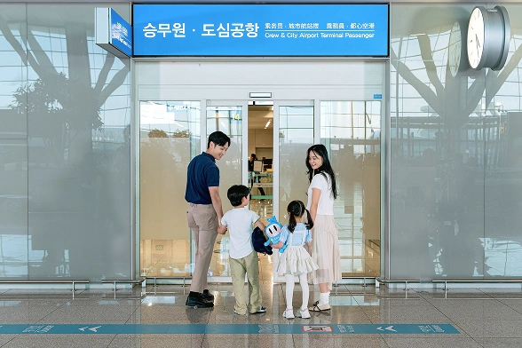
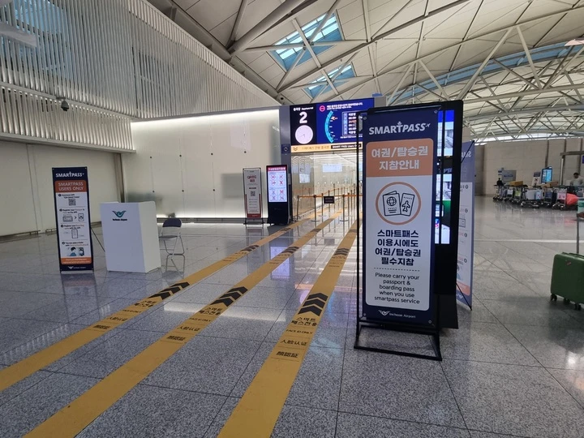

Guía de salida del aeropuerto de Incheon
Si tienes un vuelo internacional desde el aeropuerto de Incheon, procura llegar a la terminal de salida correcta unas tres horas antes del vuelo. Deja más tiempo si tu aerolínea lo recomienda, llevas equipaje especial o necesitas tramitar una devolución de impuestos.
Después de hacer el check-out del hotel, quizá todavía tengas medio día para conocer Seúl. El tiempo disponible depende de tu vuelo, de dónde te hospedes y de cómo planees llegar al aeropuerto.

Tu último día en Corea
Los planes para tu último día en Corea pueden ser muy distintos si tu vuelo sale temprano en la mañana o por la noche.
Si vuelas temprano, prepara tus maletas la noche anterior y organiza con anticipación el transporte al aeropuerto. Puede que tengas poco tiempo entre salir de tu hospedaje y llegar al mostrador de check-in de la aerolínea.
Si tu vuelo sale por la tarde o por la noche, quizá aún puedas desayunar, hacer compras o dar un último paseo por Seúl. Pregunta en el hotel si puedes dejar el equipaje después del check-out y elige un lugar desde el que puedas regresar sin tener que cruzar la ciudad con prisa.
Si tu vuelo cumple los requisitos para hacer el check-in en la terminal urbana de check-in de la estación de Seúl, quizá puedas dejar ahí tu equipaje documentado antes de seguir recorriendo la ciudad.
Los pasos de tu salida de Corea
- Confirma tu vuelo, la terminal de salida y la hora límite de check-in de la aerolínea.
- Haz el check-out y organiza el resguardo de tu equipaje o, si cumples los requisitos, el check-in y la revisión migratoria de salida en la terminal urbana.
- Dirígete a la terminal correcta del aeropuerto.
- Completa los trámites de check-in, documentación de equipaje y aduana que aún tengas pendientes.
- Pasa por seguridad y completa la revisión migratoria de salida si todavía no lo has hecho en la terminal urbana.
- Ubica tu puerta de abordaje y prepárate antes de que termine el abordaje.
Si vas a solicitar una devolución de impuestos en el aeropuerto, ten a la mano las compras y los documentos correspondientes. Avisa al personal de la aerolínea si llevas productos con derecho a devolución en el equipaje que vas a documentar, antes de entregar definitivamente la maleta.
Organiza tus últimas actividades según la hora a la que debes salir hacia el aeropuerto. Un vuelo nocturno puede darte varias horas más en Seúl, pero solo valen la pena si cuentas con una forma confiable de llegar a tu terminal.
¿Terminal 1 o Terminal 2?
El aeropuerto de Incheon tiene dos terminales de pasajeros en edificios separados. En ambas, las instalaciones de salidas internacionales se encuentran en el tercer piso, pero están demasiado lejos entre sí para ir a pie con el equipaje.
Confirma tu terminal de salida antes de elegir el autobús, el tren o un traslado privado.
Revisa tu vuelo, no solo la aerolínea
Empieza por revisar tu boleto electrónico y confirma qué aerolínea opera realmente tu vuelo. Esto es especialmente importante si reservaste un vuelo de código compartido con otra aerolínea.
Utiliza el buscador oficial de vuelos de salida del aeropuerto de Incheon para confirmar:
- Número de vuelo y hora de salida
- Terminal de salida
- Mostrador de check-in
- Puerta de abordaje, cuando esté asignada
- Estado actual del vuelo
No supongas que saldrás de Corea por la misma terminal a la que llegaste. Confirma otra vez tu vuelo antes de salir del hotel.
¿Qué pasa si llegas a la terminal equivocada?
Si te bajas en la terminal equivocada, aún puedes trasladarte entre la Terminal 1 y la Terminal 2 con el autobús de traslado gratuito del aeropuerto o con el tren de pago Airport Railroad (AREX).
De la Terminal 1 a la Terminal 2
Toma el autobús de traslado gratuito afuera de la puerta 8 del tercer piso de la Terminal 1.
De la Terminal 2 a la Terminal 1
Toma el autobús de traslado gratuito afuera de la puerta 7 del tercer piso de la Terminal 2.
El tren del aeropuerto también conecta ambas terminales. Considera el tiempo para llegar a la estación, esperar el tren y subir de nuevo al piso de salidas con tu equipaje.
Revisa los horarios vigentes antes de depender de cualquiera de estos servicios para un vuelo de madrugada o nocturno.
Si se acerca la hora límite de check-in, comunícate con tu aerolínea mientras organizas el traslado. Llegar a la terminal correcta antes del despegue no significa necesariamente que todavía puedas hacer el check-in.
¿Con cuánto tiempo de anticipación debes llegar al aeropuerto de Incheon?
El aeropuerto de Incheon recomienda llegar unas tres horas antes de un vuelo internacional. Toma como referencia la hora en la que debes estar en la terminal de salida correcta, no la hora en la que tu tren llega a la estación del aeropuerto.
La hora límite de check-in de tu aerolínea es otra cosa. Si llegas justo antes de que cierre el mostrador, tendrás muy poco margen para problemas de equipaje, revisión de documentos o retrasos inesperados.
Calcula tu horario a partir de la hora del vuelo
Empieza con la hora de salida programada que aparece en tu boleto y calcula hacia atrás el tiempo necesario para cada parte del trayecto.
- Resta el tiempo que planeas pasar en el aeropuerto, tomando tres horas como punto de partida, para calcular a qué hora debes llegar.
- Calcula el trayecto completo desde el hotel hasta el área de salidas, incluyendo las caminatas, la espera del transporte, los transbordos y el último tramo a pie dentro de la terminal.
- Agrega un margen razonable para retrasos en el transporte.
- Define la hora a la que debes salir del hotel antes de planear tus últimas visitas o compras.
Usa la calculadora de abajo para saber a qué hora debes salir del hotel, en vez de seguir un horario fijo.
Si planeas hacer el check-in en la terminal urbana de check-in de la estación de Seúl, organiza el día tomando en cuenta su hora límite de check-in, que es más temprana. Aun así, necesitas dejar suficiente tiempo para el tren exprés y los trámites pendientes en el aeropuerto.
Cuándo conviene dejar más tiempo
Tres horas son un punto de partida, no una garantía de que todos los pasajeros tarden lo mismo en salir.
Considera dejar más tiempo si:
- Viajas con niños pequeños o con alguien que necesita asistencia.
- Llevas equipaje de gran tamaño, equipo deportivo o varias maletas.
- Tu aerolínea necesita revisar visas u otros documentos de viaje en el mostrador.
- Necesitas presentar ante aduana las compras por las que solicitas una devolución de impuestos.
- Se espera que haya muchos pasajeros en el aeropuerto o mucho tráfico en el camino.
Tener el pase de abordar en el celular puede facilitar parte del proceso, pero no necesariamente elimina la documentación de equipaje ni la revisión de documentos. Aún necesitas pasar el control de seguridad y la revisión migratoria de salida, y llegar a tu puerta de abordaje.
Revisa el pronóstico de afluencia del aeropuerto antes del día de tu vuelo y los tiempos de espera en el área de salidas el día del viaje. Estos servicios te ayudan a anticipar las horas de mayor afluencia, pero no garantizan cuánto tardarás en pasar personalmente por el aeropuerto.
Si tu aerolínea recomienda llegar con más tiempo de anticipación, sigue sus instrucciones.
Consulta el pronóstico de afluencia del aeropuerto
Consulta los tiempos de espera en el área de salidas en tiempo real
Calculadora de hora de salida
¿A qué hora debes salir hacia el aeropuerto de Incheon?
Ingresa los datos de tu vuelo y el tiempo estimado de traslado para calcular cuándo salir de tu hospedaje. Ingresa la fecha y la hora del vuelo en el horario de Corea (KST).
Si tu vuelo sale temprano en la mañana, revisa si el transporte público funciona lo suficientemente temprano para llegar al aeropuerto a la hora prevista. Si no, organiza un taxi o traslado privado, o considera pasar la última noche más cerca del aeropuerto.
Si tu vuelo sale poco después de medianoche, recuerda que quizá tengas que iniciar el trayecto al aeropuerto el día anterior.
Check-out del hotel y resguardo de equipaje
Pueden pasar varias horas entre el check-out de tu hospedaje y el momento de salir de Seúl rumbo al aeropuerto de Incheon. Dónde dejes tu maleta puede determinar cuánto aproveches realmente esas horas.
Elige dónde guardar el equipaje según tus últimas actividades y la ruta al aeropuerto. Ahorrar un poco en el resguardo rara vez compensa tener que cruzar Seúl innecesariamente para recoger tus maletas.
Dejar el equipaje en el hotel
Si tu hotel guarda equipaje después del check-out y planeas pasar el resto del tiempo por la zona, dejar tus maletas en recepción suele ser lo más sencillo.
Pregunta en el hotel con anticipación:
- ¿Puedes dejar el equipaje después del check-out?
- ¿Cobran por guardar el equipaje?
- ¿Hasta qué hora puedes recogerlo?
- ¿Habrá personal en recepción cuando vuelvas?
No supongas que un departamento, una casa de huéspedes o un hospedaje con check-in autónomo ofrece el mismo servicio que un hotel con personal.
Si tus últimas actividades están en otra zona de Seúl, considera si regresar al hotel con las bolsas de compras antes de ir al aeropuerto te obligaría a dar una vuelta innecesaria.
Lleva contigo tu pasaporte, tus medicamentos, el celular, la batería externa y cualquier cosa que puedas necesitar antes del vuelo.
Servicios de resguardo y envío de equipaje
En Seúl hay varias alternativas si tu hospedaje no puede guardar las maletas o si prefieres recogerlas más cerca del punto desde el que partirás hacia el aeropuerto.
Casilleros en estaciones del metro — T-Locker
Hay casilleros en muchas estaciones de metro de Seúl. Las dimensiones publicadas van de 50 × 30 × 60 cm a 50 × 90 × 60 cm.
Las tarifas habituales por cuatro horas entre semana van de ₩2,200 a ₩4,400, con precios más altos los fines de semana. Se aplican cargos adicionales por guardar el equipaje más tiempo.
Puedes dejar y recoger tu equipaje entre las 05:00 y la medianoche. En los casilleros de Seoul Metro puedes escanear el código QR y usar el servicio web sin instalar la aplicación T-Locker ni crear una cuenta.
Revisa que haya un casillero disponible donde quepa tu maleta, incluidas las ruedas y las agarraderas. Las formas de pago y las instrucciones pueden variar según la ubicación.

Resguardo de equipaje con personal — T-Luggage
T-Luggage ofrece resguardo de equipaje con personal en estaciones importantes, entre ellas la estación de Seúl, Hongik University, Myeongdong y Jamsil.
Las tarifas publicadas por cuatro horas de resguardo van de ₩3,000 a ₩13,000, según el tamaño de la maleta y el día de la semana.
Los mostradores de T-Luggage de la estación de Seúl, Hongik University, Myeongdong y Jamsil abren de 09:00 a 22:00. Si necesitas recoger tus maletas antes de las 09:00, busca otra opción de resguardo.
Vale la pena considerar especialmente las estaciones de Seúl y Hongik University si vas a usar AREX para llegar al aeropuerto.
En la estación de Seúl, el mostrador de T-Luggage cerca de la salida 1 está del lado del metro. Deja tiempo para recoger tus maletas y caminar hasta el área de salidas de AREX.

Servicios independientes de resguardo de equipaje
Los negocios de resguardo de equipaje son otra opción cuando los casilleros de las estaciones están llenos o necesitas un horario más amplio.
LuggageDot, cerca de la estación de Seúl, ofrece acceso las 24 horas y casilleros para maletas de hasta 32 pulgadas. Está a unos 287 metros de la salida 12 y las tarifas empiezan en ₩1,000 por hora. El kiosco está disponible en inglés y acepta pagos con tarjeta.
Revisa la disponibilidad, las formas de pago y el punto exacto donde debes recoger el equipaje antes de definir tu itinerario final.
Enviar el equipaje al aeropuerto de Incheon
T-Luggage también ofrece entrega de equipaje en el aeropuerto el mismo día desde los puntos habilitados. Así puedes recorrer Seúl con más libertad sin regresar al lugar donde guardaste tus maletas.
Sin embargo, hay una hora límite para dejar el equipaje por la mañana y horarios para recogerlo en el aeropuerto por la tarde. El servicio no te conviene si necesitas tener tu maleta antes de la hora de entrega confirmada para tomar tu vuelo.
Antes de reservar, confirma la terminal de salida, la hora límite para entregar el equipaje, la primera hora confirmada en la que puedes recogerlo y el mostrador de recolección en el aeropuerto.
El envío de equipaje al aeropuerto no sustituye la documentación de equipaje con tu aerolínea. Tienes que recoger tu maleta y completar los trámites que exige la aerolínea.
Si en tu maleta llevas compras que aduana podría necesitar revisar para la devolución de impuestos, asegúrate de poder sacarlas y presentarlas antes de entregar el equipaje a la aerolínea.
Consulta los servicios de resguardo y envío de T-Luggage
Cómo aprovechar tus últimas horas en Seúl
Organiza tus últimas actividades siguiendo la ruta hacia el aeropuerto, en lugar de ir de un extremo a otro de Seúl.
Si te hospedas en Hongdae y vas a tomar un tren AREX con paradas, pasar las últimas horas en Hongdae o Yeonnam te permite recoger tu equipaje cerca de la estación.
Si piensas tomar el tren exprés AREX desde la estación de Seúl, guardar el equipaje cerca de la estación puede permitirte terminar tu recorrido en otra zona sin regresar al hospedaje original.
Los viajeros que pueden usar la terminal urbana de check-in de la estación de Seúl tienen otra opción: hacer el check-in y documentar su equipaje antes de seguir recorriendo la ciudad.
Si tu vuelo es temprano o queda poco tiempo entre el check-out y la salida al aeropuerto, evita trámites adicionales de resguardo y ve directamente al aeropuerto.
Usa la calculadora de hora de salida de arriba para saber cuándo iniciar el viaje al aeropuerto. Calcula también cuánto tiempo necesitas para recoger tu equipaje antes de salir.
Terminal urbana de check-in de la estación de Seúl
Si tu vuelo sale por la tarde o por la noche, quizá puedas documentar la maleta en la estación de Seúl por la mañana, pasar el resto de tu tiempo en la ciudad sin el equipaje documentado y tomar más tarde el tren exprés AREX al aeropuerto de Incheon.
La terminal urbana de check-in (City Airport Terminal) está en el nivel B2 de la zona de Airport Railroad de la estación de Seúl. Ofrece check-in, documentación de equipaje y revisión migratoria de salida a los viajeros que cumplen los requisitos.

¿Quién puede utilizar la terminal urbana de check-in?
Antes de organizar tu último día en torno a este servicio, asegúrate de cumplir los tres requisitos:
- Tienes un vuelo internacional desde el aeropuerto de Incheon ese mismo día.
- La aerolínea que opera tu vuelo y el vuelo mismo deben ser elegibles para hacer el check-in en la terminal urbana.
- Tienes un boleto de tren exprés AREX desde la estación de Seúl hasta el aeropuerto de Incheon.
Un boleto del tren con paradas o una tarjeta T-money por sí solos no te permiten usar este servicio.
| Aerolínea operadora | Terminal del aeropuerto | Vuelos admitidos |
|---|---|---|
| Jeju Air (7C) | T1 | Se excluyen las rutas a América, Guam y Saipán |
| Trinity Airways (antes T'way Air) (TW) | T1 | Se excluyen las rutas a América, Guam y Saipán. Se admiten vuelos de código compartido operados por Trinity Airways. |
| Eastar Jet (ZE) | T1 | Rutas operadas por Eastar Jet |
| Korean Air (KE) | T2 | Incluye vuelos de código compartido operados por Korean Air |
| Asiana Airlines (OZ) | T2 | Incluye vuelos de código compartido operados por Asiana |
| Jin Air (LJ) | T2 | Se excluyen las rutas a América, Guam y Saipán. Se admiten vuelos de código compartido operados por Jin Air. |
| Air Busan (BX) | T2 | Incluye vuelos de código compartido operados por Air Busan |
| Air Seoul (RS) | T2 | Se excluyen las rutas a América, Guam y Saipán. Se admiten vuelos de código compartido operados por Air Seoul. |
La aerolínea que aparece en tu boleto puede ser distinta de la que opera el vuelo. Revisa qué aerolínea lo opera y confirma que puedes usar el servicio antes de ir a la estación de Seúl.
La terminal urbana no acepta maletas de más de 150 cm de largo. También hay otras restricciones de dimensiones, peso y manejo. Si viajas con equipo deportivo, instrumentos musicales u otro equipaje de gran tamaño, revisa las restricciones de tu aerolínea para la terminal urbana antes de ir a la estación de Seúl.
Los viajeros con mascotas o necesidades de asistencia especial deben consultar directamente a su aerolínea.
Consulta las aerolíneas admitidas y las condiciones vigentes del servicio
Check-in y revisión migratoria de salida
-
Paso 1 — Compra el boleto del tren exprés AREX
Compra el boleto en línea o en las máquinas del nivel B2 de la estación de Seúl. Usa el código QR del boleto para entrar al área de check-in de la terminal urbana.
Elige una hora de salida del tren que encaje con tus planes y te deje tiempo suficiente en el aeropuerto de Incheon.
-
Paso 2 — Haz el check-in y documenta tu equipaje
Ve al mostrador de tu aerolínea con tu pasaporte y los datos del vuelo. Haz el check-in, recibe tu pase de abordar y entrega el equipaje que vas a documentar.
Antes de salir del área de check-in, espera a que el personal confirme que tu maleta pasó la revisión de equipaje.
Tu equipaje documentado se enviará para tu vuelo. Normalmente no tendrás que recogerlo de nuevo en el aeropuerto de Incheon.
Antes de entregar la maleta
Si vas a solicitar una devolución de impuestos en el aeropuerto de Incheon, es posible que aduana tenga que revisar los productos comprados.
Lleva esos artículos contigo si están permitidos en el equipaje de mano. Si deben ir en el equipaje documentado y podrían necesitar una inspección, considera documentar tu maleta en el aeropuerto de Incheon.
Guarda tu pasaporte, pase de abordar, medicamentos, objetos de valor y batería externa en el equipaje de mano.
-
Paso 3 — Completa la revisión migratoria de salida
Lleva tu pasaporte y pase de abordar al mostrador de migración del mismo piso.
Al completar aquí tanto la revisión migratoria de salida como el check-in, puedes usar el acceso de salida reservado para los usuarios de la terminal urbana en el aeropuerto de Incheon.
Horarios y horas límite de check-in
| Servicio | Horario o plazo límite |
|---|---|
| Check-in y documentación de equipaje | 05:20–19:00 |
| Última hora de atención para check-in | 18:50 |
| Revisión migratoria de salida | 05:30–19:00 |
| Hora límite para completar el check-in — Terminal 1 | 3 horas antes del vuelo |
| Hora límite para completar el check-in — Terminal 2 | 3 horas y 20 minutos antes del vuelo |
La hora límite de tu vuelo indica cuándo debes haber completado el check-in, no a qué hora debes llegar a la estación de Seúl.
Calcula hacia atrás desde la hora de salida de tu vuelo y agrega tiempo para llegar a la terminal urbana, esperar en el mostrador y completar la revisión migratoria.
También debes llegar antes de la última hora de atención de la terminal urbana.
Si tu vuelo sale poco después de medianoche, no supongas que puedes hacer el check-in en la estación de Seúl el día anterior. Confirma si cumples los requisitos con tu aerolínea, ya que el servicio está pensado para vuelos del mismo día.
Para algunos vuelos de madrugada, la terminal urbana abre demasiado tarde para cumplir la hora límite de check-in. En ese caso, ve directamente al aeropuerto de Incheon.
De la estación de Seúl al aeropuerto de Incheon
El tren exprés AREX sale del nivel B7. Sigue los letreros de Express Train y deja suficiente tiempo para llegar al andén desde el nivel B2.
| Destino | Duración del trayecto en tren exprés |
|---|---|
| Terminal 1 del aeropuerto de Incheon | 43 minutos |
| Terminal 2 del aeropuerto de Incheon | 51 minutos |
Estos tiempos corresponden solo al viaje en tren. Incluye en tu plan la espera en la estación de Seúl y la caminata desde la estación del aeropuerto hasta el área de salidas.
Al llegar al aeropuerto de Incheon, ve al área de salidas del piso 3 (3F) y sigue los letreros del acceso de salida reservado para los usuarios de la terminal urbana de check-in.


Ten a la mano tu pasaporte y pase de abordar.
Aún debes pasar el control de seguridad y llegar a tu puerta antes de que termine el abordaje. Hacer el check-in en la terminal urbana no te exime de pasar por seguridad.
¿Vale la pena usar la terminal urbana de check-in?
Si tu último día pasa por la estación de Seúl, tu vuelo cumple los requisitos y vas a tomar el tren exprés, hacer el check-in temprano puede darte varias horas en Seúl sin cargar tu maleta.
En cambio, si te hospedas cerca de otra estación de AREX, vas a viajar en autobús al aeropuerto o llevas equipaje que requiere manejo especial, pasar por la estación de Seúl puede ser una vuelta innecesaria.
Si te hospedas en Hongdae y vas directo al aeropuerto de Incheon en el tren AREX con paradas, ir hasta la estación de Seúl solo para hacer el check-in podría costarte más tiempo del que ahorras.
Cómo llegar al aeropuerto de Incheon desde Seúl
La zona donde te hospedas en Seúl importa más que la velocidad del tren al aeropuerto. Si estás cerca de una estación de AREX, el tren puede ser la forma más sencilla de llegar a Incheon. Si tu hotel está cerca de una parada del autobús al aeropuerto en Myeongdong o Gangnam, el autobús puede evitarte cargar las maletas por varias estaciones del metro.
Antes de elegir el transporte, ten en cuenta cuánto equipaje llevas, cuánto tendrás que caminar y a qué hora necesitas llegar a la terminal de salida.
AREX: tren exprés y tren con paradas
El tren exprés AREX va directo de la estación de Seúl al aeropuerto de Incheon. Tiene asientos reservados y requiere un boleto aparte, que puedes comprar en línea o en la estación.
El tren con paradas (All-Stop Train) pasa por Gongdeok, Hongik University, Digital Media City y otras estaciones de la línea del aeropuerto. Puedes pagar con una tarjeta T-money o comprar un boleto de un solo viaje.
| Tren exprés | Tren con paradas | |
|---|---|---|
| Terminal 1 | 43 minutos | 59 minutos |
| Terminal 2 | 51 minutos | 66 minutos |
| Tarifa de adulto a T1 | ₩13,000 | ₩4,750 |
| Tarifa de adulto a T2 | ₩13,000 | ₩5,350 |
| Asientos | Con reserva | Sin reserva |
Las tarifas del tren con paradas que se muestran corresponden al pago con tarjeta de transporte. Algunos trenes tardan unos minutos más.
Si te hospedas en Hongdae o Gongdeok, toma el tren con paradas directamente al aeropuerto. La tarifa de adulto desde cualquiera de las dos estaciones es de ₩4,650 hasta la Terminal 1 o ₩5,250 hasta la Terminal 2. Volver a la estación de Seúl solo para tomar el tren exprés suele agregar tiempo y esfuerzo innecesarios.
Revisa el destino que indica el tren antes de subir. Algunos servicios con paradas terminan en Geomam en lugar de continuar hasta el aeropuerto de Incheon.
En la estación de Seúl, deja tiempo para llegar al área de AREX, sobre todo si llegas en metro o KTX. La zona de venta de boletos del tren exprés está en el nivel B2 y el andén en el B7.
Si ya hiciste el check-in en la terminal urbana de check-in de la estación de Seúl, debes viajar en el tren exprés.
Consulta los horarios del tren exprés AREX
Consulta las tarifas del tren con paradas
Autobús Airport Limousine
Un autobús Airport Limousine puede ahorrarte bastante caminata si hay una parada adecuada cerca de tu hospedaje. Las maletas grandes viajan en el compartimento de equipaje, así que no tienes que cargarlas por estaciones del metro ni cambiar de tren.
Algunas rutas habituales de autobús al aeropuerto son:
- 6001 y 6015: Myeongdong y zonas cercanas del centro de Seúl — ₩17,000 por adulto.
- 6002: Hongdae y otras paradas del centro de Seúl — ₩17,000 por adulto.
- 6103: servicio directo desde COEX City Airport al aeropuerto de Incheon — ₩18,000 por adulto.
Revisa la ubicación exacta de la parada que va hacia el aeropuerto. Podría estar del otro lado de la calle con respecto a la parada donde bajaste al llegar a Seúl.
En rutas de Airport Limousine como la 6002 y la 6015, los pasajeros suben por orden de llegada y pagan con tarjeta de transporte o en efectivo. Si el autobús está lleno, quizá tengas que esperar al siguiente.
Otros servicios funcionan de forma distinta. El autobús 6103 desde COEX, por ejemplo, admite reservas anticipadas.
Indica al conductor si sales de la Terminal 1 o de la Terminal 2 antes de que cargue tu equipaje.
El tráfico puede aumentar considerablemente el tiempo de traslado. Si viajas en horas de mucho tráfico, sal con más margen o considera el tren si puedes llegar fácilmente a una estación de AREX.
Rutas y horarios de Airport Limousine
Autobús 6103 al aeropuerto desde COEX
Taxi
Un taxi te lleva directamente desde tu hospedaje hasta el área de salidas, sin transbordos en estaciones ni caminatas hasta una parada.
Si viajan dos o tres personas y comparten la tarifa, el costo adicional puede valer la pena cuando llevan varias maletas o tendrían que hacer varios transbordos en el metro.
Los taxis normales de Seúl usan taxímetro; las cuotas de autopista y los recargos aplicables influyen en el precio final.
El servicio International Taxi de Seúl también ofrece tarifas fijas para los traslados al aeropuerto. Las tarifas publicadas para un vehículo estándar oscilan entre ₩70,000 y ₩95,000, según el distrito.
No supongas que cuatro pasajeros y cuatro maletas grandes caben en un taxi estándar. Revisa la capacidad para equipaje o solicita un vehículo más grande con anticipación.
Pide en el hotel que te ayuden a conseguir un taxi o usa un servicio de reservación de taxis. Asegúrate de que el conductor conozca tu terminal de salida correcta.
Consulta las tarifas y reservas de International Taxi
Traslado privado reservado con anticipación
Vale la pena considerar un traslado privado reservado con anticipación si viajas con niños, varias maletas grandes o un grupo que necesita un vehículo más amplio.
También puede ser útil si tienes que salir de tu hospedaje antes de que empiece a funcionar el transporte público habitual.
Antes de reservar, confirma:
- Dirección del hotel y hora a la que te recogerán.
- Terminal de salida en el aeropuerto de Incheon.
- Número y tamaño de las maletas que realmente caben en el vehículo.
- Disponibilidad de asientos infantiles, si los necesitas.
- Si están incluidas las cuotas de autopista, el estacionamiento y los recargos por viajes de madrugada o por la noche.
- Condiciones de cancelación y tiempo de espera.
Asegúrate de elegir el trayecto de Seúl al aeropuerto de Incheon al reservar. Un traslado reservado para llegadas al aeropuerto puede no incluir que te recojan en tu hotel.
Con un traslado privado no tienes que buscar transporte el día de salida, pero el tráfico sigue afectando el trayecto. Usa la calculadora de hora de salida de arriba para definir a qué hora deben recogerte, con un margen adecuado para posibles retrasos.
Vuelos de madrugada y nocturnos
Llegar al aeropuerto de Incheon fuera del horario habitual del transporte público requiere algo más de planificación. Seúl dispone de autobuses nocturnos al aeropuerto, pero los trenes y los autobuses regulares no funcionan las 24 horas.
Revisa a qué hora necesitas llegar al aeropuerto antes de decidir si pasas la última noche en Seúl o más cerca del aeropuerto.
Vuelos temprano en la mañana
Si tu vuelo sale a las 08:00, llegar tres horas antes supone estar en el aeropuerto a las 05:00. Esperar al primer tren AREX desde la estación de Seúl ya te haría llegar más tarde de lo previsto.
El primer tren con paradas sale de la estación de Seúl a las 05:20. El primer tren exprés sale a las 06:00 y llega a la Terminal 1 a las 06:43 y a la Terminal 2 a las 06:51.
Dependiendo de tu vuelo y de dónde te hospedes, quizá puedas tomar uno de los primeros autobuses al aeropuerto. Revisa a qué hora pasa por la parada donde realmente vas a subir, no solo a qué hora inicia la ruta.
| Ruta | Principales zonas por las que pasa | Tarifa de adulto |
|---|---|---|
| N6000 | Gangnam Express Bus Terminal, Heukseok, Yeomchang, Songjeong | ₩17,000 |
| N6002 | Cheongnyangni, Dongdaemun, Gwanghwamun, Hongdae | ₩17,000 |
| N6701 | Dongdaemun Design Plaza, Myeongdong, estación de Seúl, Mapo | ₩18,000 |
| N6703 | Gwangnaru, Gangbyeon, Jamsil, Samseong, Banpo | ₩18,000 |
La tarifa de adulto de la ruta N6000 desde la estación de Songjeong hasta el aeropuerto de Incheon es de ₩10,000.
Las cuatro rutas llegan a ambas terminales del aeropuerto.
En las rutas N6000 y N6002 puedes pagar en efectivo o con T-money al subir en Seúl. Para N6701 y N6703, revisa las opciones vigentes de boletos y pago del operador.
Los autobuses nocturnos pasan con menos frecuencia que los diurnos. Consulta el horario de tu parada y deja margen suficiente por si no puedes subir al autobús previsto.
Consulta los horarios de autobuses nocturnos a la Terminal 1
Consulta los horarios de autobuses nocturnos a la Terminal 2
Cuándo vale la pena considerar un taxi o un hotel cerca del aeropuerto
Si no hay un autobús nocturno que te convenga cerca de tu hospedaje, organiza un taxi o traslado privado la noche anterior.
Para familias con niños pequeños, cambiarse a un hotel cerca del aeropuerto la última tarde puede ser más cómodo que despertar a todos en plena madrugada para hacer el trayecto desde Seúl.
Antes de reservar un hotel cerca del aeropuerto, confirma cómo llegarás a tu terminal de salida. Es posible que el servicio de transporte del hotel no empiece lo suficientemente temprano para tu vuelo. Además, hospedarte cerca del aeropuerto no significa necesariamente que puedas caminar hasta la terminal.
Vuelos a última hora de la noche y después de medianoche
Es fácil confundir la fecha de un vuelo que sale poco después de medianoche. Si tu boleto indica las 00:30 del martes, normalmente tendrás que ir al aeropuerto el lunes por la noche.
Si tienes un vuelo nocturno, quizá puedas pasar la mayor parte de tu último día en Seúl y tomar un tren o un autobús regular al aeropuerto.
El último tren exprés AREX sale de la estación de Seúl a las 23:00. El último tren con paradas que continúa hasta el aeropuerto de Incheon sale a las 23:40. Los servicios posteriores con paradas pueden terminar en Geomam.
Esos son horarios de salida del transporte, no horas recomendadas para salir rumbo a tu vuelo. Calcula hacia atrás desde la hora de salida programada del vuelo y la hora a la que debes llegar al aeropuerto.
Consulta los horarios de las estaciones de AREX
Si planeas pasar varias horas en el aeropuerto durante la noche, revisa cuándo abre el mostrador de check-in de tu aerolínea. Quizá tengas que esperar en el área pública con tu equipaje antes de entrar al área de salidas.
Los restaurantes, las tiendas y los demás servicios del aeropuerto tienen sus propios horarios. No supongas que todos estarán disponibles durante toda la noche.
Usa la calculadora de hora de salida para definir la fecha y hora en que debes salir antes de organizar tu última noche de hotel, la recolección de equipaje o el transporte al aeropuerto.
Check-in y documentación de equipaje
Al llegar a la terminal correcta del aeropuerto de Incheon, dirígete al área de salidas del tercer piso. Revisa en las pantallas de información de vuelos el mostrador de check-in de tu aerolínea.
Si ya hiciste el check-in y completaste la revisión migratoria de salida en la terminal urbana de check-in de la estación de Seúl, sigue los letreros del acceso de salida reservado para sus usuarios.
Check-in en línea o en el aeropuerto
Hacer el check-in en línea antes de salir de tu hospedaje puede ahorrarte tiempo en el aeropuerto. Quizá puedas elegir asiento y recibir tu pase de abordar en el celular desde el sitio web o la app de tu aerolínea.
El siguiente paso depende de tu equipaje y de tus documentos de viaje.
- Si tienes un pase de abordar válido, solo llevas equipaje de mano y no quedan documentos por revisar, por lo general puedes dirigirte al control de seguridad después de completar los trámites de aduana necesarios.
- Si vas a documentar equipaje, ve al mostrador de entrega de equipaje de tu aerolínea o a una máquina de entrega de equipaje de autoservicio que puedas usar.
- Si tu aerolínea necesita revisar tu pasaporte, visa u otros documentos de viaje, ve a un mostrador de check-in con personal.
Hay kioscos de autoservicio en las dos terminales del aeropuerto. Sin embargo, no todas las aerolíneas, destinos y tipos de pasajeros permiten hacer el check-in de autoservicio.
Documentación de equipaje y horas límite de la aerolínea
Revisa cuánto equipaje puedes llevar antes de llegar al aeropuerto. El peso, las dimensiones y la cantidad de piezas permitidas dependen de tu aerolínea y boleto.
Un boleto de clase económica no incluye necesariamente equipaje documentado, especialmente si viajas con una aerolínea de bajo costo.
El aeropuerto de Incheon también cuenta con máquinas de entrega de equipaje de autoservicio para pasajeros que cumplen los requisitos. El límite general publicado por el aeropuerto es una longitud inferior a 90 cm por pieza, con condiciones adicionales que dependen de la aerolínea.

Si llevas equipaje de gran tamaño, equipo deportivo o debes pagar un cargo por exceso de equipaje, revisa si necesitas ir a un mostrador con personal.
Las horas límite de check-in y documentación de equipaje de tu aerolínea son distintas de la hora programada de salida del vuelo. Revisa esos plazos antes de salir de tu hospedaje, aunque ya tengas tu pase de abordar en el celular.
Consulta la disponibilidad de check-in y entrega de equipaje de autoservicio
Antes de entregar la maleta
Tómate un momento para revisar qué llevas dentro de tu maleta antes de que se vaya por la banda de equipaje.
Lleva contigo estos artículos:
- Pasaporte, pase de abordar y documentos de viaje necesarios.
- Medicamentos que puedas necesitar durante el viaje.
- Dinero, objetos de valor y artículos personales imprescindibles.
- Baterías externas y baterías de litio de repuesto permitidas en cabina.
- Documentos para la devolución de impuestos y las compras que deban seguir disponibles para una inspección de aduana.
Si llevas en la maleta que vas a documentar productos por los que aún necesitas solicitar una devolución de impuestos, avisa al personal de la aerolínea antes de entregar el equipaje definitivamente.
El personal puede indicarte los trámites correctos de aduana y entrega de equipaje.
Conserva el comprobante de equipaje documentado y sigue las instrucciones de tu aerolínea si hace falta una revisión adicional de la maleta.
Una vez aceptada la maleta, recuperarla puede resultar difícil y retrasar tu salida.
Devolución de impuestos antes de salir de Corea
Si dedicaste parte de tu viaje a comprar cosméticos, ropa u otros productos, revisa antes de salir de Corea si tienes alguna devolución de impuestos pendiente.
Lo importante en el aeropuerto de Incheon es saber si todavía necesitas completar la revisión de aduana, cobrar la devolución o ambas cosas.
Devolución inmediata o devolución en el aeropuerto
No todas las compras con devolución de impuestos requieren otra visita a un mostrador de devolución en el aeropuerto.
Devolución inmediata de impuestos
En las tiendas participantes, los viajeros que cumplen los requisitos pueden mostrar su pasaporte y recibir la reducción de impuestos al pagar.
Las condiciones de compra son las siguientes:
- Al menos ₩15,000 por transacción.
- Menos de ₩1,000,000 por transacción.
- Un máximo total de ₩5,000,000 en compras con devolución inmediata durante el viaje.
Si ya te descontaron los impuestos al pagar, no solicites esa misma devolución otra vez en el aeropuerto.
Devolución de impuestos regular
Pagas el precio completo en un comercio participante y recibes la documentación para la devolución. Después puedes solicitar la devolución correspondiente a través de un servicio autorizado.
Para la mayoría de los visitantes internacionales, los requisitos incluyen una estancia en Corea de menos de seis meses y sacar los productos del país dentro de los tres meses posteriores a la compra. Los productos deben permanecer nuevos, sin usar y sin abrir.
Si recibiste la devolución por adelantado en un punto de devolución de la ciudad, revisa si aún debes completar la verificación de exportación en el aeropuerto.
Conserva los recibos y los documentos de devolución hasta terminar el proceso.
Consulta los requisitos y las condiciones de devolución de impuestos en Corea
Devolución de impuestos de compras en el equipaje documentado
Si tu maleta contiene compras con derecho a devolución que no pueden viajar en tu equipaje de mano, como productos para el cuidado de la piel de tamaño normal, completa los trámites de aduana necesarios antes de que se lleven la maleta.
-
Paso 1 — Avisa a tu aerolínea al hacer el check-in
Explica que la maleta que vas a documentar contiene productos por los que debes completar los trámites de devolución de impuestos.
La aerolínea puede etiquetar la maleta y devolvértela temporalmente para realizar los trámites de aduana.
-
Paso 2 — Usa el kiosco de devolución de impuestos
Ve a un kiosco de devolución de impuestos en el área pública de salidas del tercer piso. Sigue las instrucciones de la pantalla para registrar tu pasaporte y los documentos de devolución.
El kiosco te indicará si tus compras requieren una inspección de aduana.

-
Paso 3 — Completa la inspección de aduana si es necesaria
Si te indican que vayas al mostrador de aduana, presenta tu pasaporte, los documentos de devolución y los productos correspondientes.
Ten esos artículos a la mano en lugar de empacarlos debajo de todo lo demás.
-
Paso 4 — Entrega el equipaje documentado
Sigue las instrucciones del personal del aeropuerto. Una vez terminadas las revisiones necesarias, puedes entregar tu maleta en la banda de equipaje designada cerca del mostrador de aduana.
Después puedes pasar el control de seguridad y la revisión migratoria de salida, y cobrar cualquier devolución pendiente en el área de abordaje.
Devolución de impuestos de compras en el equipaje de mano
Si tus compras están permitidas en cabina, puedes llevarlas contigo durante los trámites de aduana.
Después de obtener tu pase de abordar, ve a un kiosco de devolución de impuestos en el área pública de salidas. Si el kiosco indica que se necesita una inspección de aduana, lleva los productos y documentos al mostrador de aduana.
No supongas que un comprobante de devolución de impuestos te permite pasar el control de seguridad con envases de líquidos que superen los límites.
Por ejemplo, un envase de 200 ml de un producto coreano de cuidado de la piel comprado en un comercio normal con devolución de impuestos sigue sujeto a las restricciones de líquidos en el equipaje de mano de los vuelos internacionales.
Si piensas empacar esas compras en tu maleta documentada, sigue el procedimiento de devolución para equipaje documentado antes de entregar la maleta.
Cobrar la devolución
Completar la revisión de aduana o la verificación del kiosco no significa necesariamente que ya recibiste la devolución.
Sigue las instrucciones del sistema de devolución y revisa si necesitas recibir el dinero en efectivo o completar la devolución a tu tarjeta en un mostrador o kiosco del área de abordaje.
| Terminal | Ubicación | Horario del mostrador con personal | Kiosco de autoservicio |
|---|---|---|---|
| Terminal 1 | 3F, cerca de la puerta 28 | 07:00–22:00 | 24 horas |
| Edificio de abordaje (Concourse) | 3F, cerca de la farmacia central | — | 24 horas |
| Terminal 2 | 3F, cerca de las puertas 249 y 270, según el directorio de instalaciones del aeropuerto | 07:00–21:30, según el directorio | Confirma con el proveedor de tu devolución |
La guía de devolución de impuestos del aeropuerto, por separado, indica la puerta 253. Confirma con tu proveedor de devolución el punto de cobro en el área de abordaje y sus horarios.
La Terminal 2 también tiene kioscos de devolución de impuestos disponibles las 24 horas cerca de los mostradores de check-in F y G, en el área pública de salidas. Son distintos de los puntos de cobro situados después de seguridad y de la revisión migratoria de salida.
Los puntos de cobro indicados están después del control de seguridad y de la revisión migratoria de salida.
Según el servicio de devolución, quizá puedas recibir efectivo o un reembolso a tu tarjeta. Revisa las opciones disponibles antes de terminar el trámite.
Que un kiosco funcione las 24 horas no significa que las inspecciones de aduana con personal o la ayuda para la devolución estén disponibles todo el día y toda la noche.
Si tienes un vuelo de madrugada o nocturno, o varias compras que puedan requerir una inspección, reserva más tiempo para la devolución.
No dejes la devolución para los últimos minutos antes de abordar.
Consulta los trámites y puntos de devolución de impuestos del aeropuerto de Incheon
Control de seguridad
Después del check-in, la documentación de equipaje y los trámites de aduana necesarios, dirígete al área de control de seguridad.
Ten a la mano tu pasaporte y pase de abordar. Coloca tus pertenencias en las charolas de seguridad y sigue las instrucciones del personal del aeropuerto.
Las instalaciones actuales de seguridad del aeropuerto de Incheon generalmente permiten dejar las laptops y tabletas dentro de tu bolsa. Aun así, el personal puede pedirte que saques artículos o realizar revisiones adicionales.
Líquidos, cosméticos y artículos de higiene personal
Los vuelos internacionales que salen del aeropuerto de Incheon están sujetos a restricciones de líquidos, aerosoles y geles en el equipaje de mano.
| Artículo | Requisito para el equipaje de mano |
|---|---|
| Cada envase de líquido | 100 ml o menos |
| Bolsa transparente con cierre resellable | Capacidad máxima de 1 litro |
| Número de bolsas | Una por pasajero |
La restricción se aplica a la capacidad del envase, no a la cantidad de líquido que quede dentro.
Por tanto, un envase de 200 ml medio vacío sigue siendo demasiado grande para llevarlo en el equipaje de mano ordinario.
Algunos productos que se suelen comprar en Corea y que están sujetos a estas restricciones son:
- Tónicos, lociones y productos líquidos para el cuidado de la piel.
- Bloqueadores solares, cremas y brillos labiales.
- Perfumes, shampoos y pasta dental.
- Kimchi, gochujang y otros alimentos que contengan líquidos o pastas.
Guarda los envases de mayor tamaño en el equipaje documentado cuando esté permitido.
Puede haber excepciones para los medicamentos líquidos necesarios y la comida para bebés. Revisa las condiciones aplicables antes de viajar.
Los líquidos comprados en tiendas libres de impuestos pueden estar permitidos dentro de una bolsa de seguridad sellada y aprobada para compras duty-free. Mantén la bolsa sellada hasta abordar tu último vuelo y revisa las reglas de cualquier aeropuerto de conexión.
Las compras en comercios normales con devolución de impuestos no quedan automáticamente incluidas en esta excepción.
Baterías externas y baterías de litio
Revisa tus baterías externas antes de empacar. Deben ir en el equipaje de mano, no en el equipaje documentado.
Según las reglas vigentes, cada pasajero puede llevar como máximo dos baterías externas permitidas.
| Capacidad de la batería | Baterías externas permitidas |
|---|---|
| Hasta 100 Wh | Permitidas, con el límite de dos baterías externas |
| Más de 100 Wh y hasta 160 Wh | No las lleves en viajes internacionales. Las aerolíneas pueden prohibir las baterías externas de este rango de capacidad. |
| Más de 160 Wh | No permitidas |
Las reglas de Corea permiten actualmente determinadas baterías externas de más de 100 Wh y hasta 160 Wh con autorización de la aerolínea. Sin embargo, la guía de IATA para pasajeros de 2026 ya excluye las baterías externas de más de 100 Wh, y su Reglamento de Mercancías Peligrosas de 2027 las prohíbe a partir del 1 de enero de 2027.
Para viajes internacionales, lleva como máximo dos baterías externas, cada una con una capacidad nominal de 100 Wh o menos. Las baterías de litio de repuesto tienen restricciones distintas. Revisa los requisitos de todas las aerolíneas que operan los vuelos de tu itinerario.
Asegúrate de que la capacidad de la batería esté claramente indicada. Protege los terminales expuestos contra cortocircuitos y guarda cada batería externa por separado.
Durante el vuelo:
- No uses una batería externa para cargar tu celular u otro dispositivo.
- No recargues la propia batería externa.
- No guardes las baterías externas en los compartimentos superiores de equipaje.
Mantenlas en un lugar accesible según las instrucciones de la tripulación de cabina.
Las baterías dañadas, hinchadas o retiradas del mercado pueden ser rechazadas para su transporte. Revisa los requisitos de tu aerolínea antes de salir al aeropuerto.
Consulta las normas sobre baterías y artículos restringidos
Artículos restringidos y controles de seguridad
Algunos artículos no pueden viajar en el equipaje de mano y otros pueden estar prohibidos tanto en el equipaje de mano como en el documentado.
Si piensas llevar a casa alimentos, cosméticos, dispositivos electrónicos o recuerdos poco habituales, revisa las restricciones correspondientes antes de empacar.
Los cigarros electrónicos deben ir en el equipaje de mano y no pueden usarse ni cargarse durante el vuelo. Otros dispositivos con baterías, incluidos ciertos aparatos inalámbricos para peinar el cabello, pueden tener restricciones adicionales.
Una vez que pases seguridad y la revisión migratoria de salida, no cuentes con regresar al área pública de salidas para reorganizar tu equipaje.
Recuerda que las reglas de seguridad aérea y las reglas aduaneras de tu país de destino son distintas. Un alimento permitido a bordo puede estar restringido al entrar a otro país.
Consulta los procedimientos de control de seguridad del aeropuerto de Incheon
Consulta los artículos restringidos del aeropuerto de Incheon
Smart Pass y revisión migratoria de salida
El aeropuerto de Incheon ofrece dos servicios biométricos distintos que pueden simplificar la salida: Smart Pass y Smart Entry Service (SES).
Smart Pass facilita la entrada al área de revisión de salida mediante reconocimiento facial. SES es el sistema automatizado de control migratorio. Registrarte en uno no te registra automáticamente en el otro.
Cómo utilizar Smart Pass en el aeropuerto de Incheon
Puedes registrarte en Smart Pass con la app Incheon Airport SMARTPASS o en un kiosco de autoservicio habilitado en el aeropuerto.
Para utilizar el servicio:
- Registra tu pasaporte.
- Registra tus datos de reconocimiento facial.
- Registra el pase de abordar de tu vuelo.
- Sigue los letreros de Smart Pass en el acceso al área de salidas.

Tus datos faciales registrados tienen una validez de cinco años, pero debes volver a registrarte si renuevas tu pasaporte. Tienes que registrar el pase de abordar de cada vuelo de salida, aunque algunas aerolíneas lo hacen automáticamente durante el check-in.
Smart Pass está disponible para viajeros a partir de los siete años. Los menores de 14 años necesitan el consentimiento de sus padres.
Los pasajeros registrados pueden usar los carriles de salida Smart Pass habilitados sin importar su aerolínea. El abordaje con reconocimiento facial solo está disponible en las aerolíneas participantes y en ciertas puertas de abordaje.
Lleva contigo tu pasaporte y pase de abordar incluso después de registrarte.
Smart Pass no te exime de pasar por seguridad ni de la revisión migratoria de salida. Tampoco garantiza que evitarás todas las filas del aeropuerto.
Si la app no puede leer tu pasaporte o tienes problemas para registrarte, usa el acceso de salida regular. No necesitas retrasar tu salida intentando que la app funcione.
Consulta el registro de Smart Pass y los servicios disponibles
Revisión migratoria de salida y control migratorio automatizado
Después de pasar seguridad, debes completar la revisión migratoria de salida, a menos que ya lo hayas hecho en la terminal urbana de check-in de la estación de Seúl.
Muchos visitantes internacionales pueden usar las puertas automatizadas de migración de Corea sin registrarse por separado.
Por lo general, los visitantes extranjeros de corta estancia de 17 años o más que proporcionaron sus huellas digitales y datos faciales al entrar a Corea pueden usar Smart Entry Service al salir del país.
Para usar una puerta automatizada de migración:
- Coloca la página con la foto de tu pasaporte sobre el lector.
- Entra cuando se abra la puerta.
- Escanea tu huella digital según las instrucciones.
- Mira a la cámara de reconocimiento facial.
Sigue las instrucciones adicionales que aparezcan en la puerta automatizada.
Si no pueden verificar tu pasaporte o tus datos biométricos, usa un mostrador de migración con personal.
Si viajas con niños que no pueden usar el control migratorio automatizado, deja tiempo para que toda la familia pase junta por los mostradores con personal.
Una vez que completes la revisión migratoria de salida, entrarás a la zona libre de impuestos. Termina antes cualquier trámite que requiera acceso al área pública de salidas.
Cómo encontrar tu puerta de abordaje
Después de completar la revisión migratoria de salida, revisa tu puerta de abordaje antes de detenerte a comer, comprar o cobrar una devolución de impuestos.
El aeropuerto de Incheon es grande y tu puerta puede estar más lejos de lo que imaginas.
Revisa tu puerta y la hora de abordaje
Tu pase de abordar normalmente indica la puerta y la hora de abordaje. Sin embargo, la puerta asignada puede cambiar después del check-in.
Consulta las pantallas de información de vuelos del aeropuerto y los avisos de tu aerolínea.
Recuerda que la hora de abordaje, la hora de cierre de la puerta y la hora de salida del vuelo son distintas. Pueden negarte el abordaje aunque el avión aún no haya salido.
| Números de puerta | Área de abordaje |
|---|---|
| 1–50 | Terminal 1 |
| 101–132 | Edificio de abordaje (Concourse) |
| 208–290 | Terminal 2 |
Organiza el tiempo que te queda en el aeropuerto en función del número de puerta confirmado.
Si debes recoger compras libres de impuestos, cobrar una devolución o comer, calcula cuánto tardarás en llegar después a tu puerta.
El aeropuerto recomienda llegar a la puerta entre 30 y 40 minutos antes de la hora de abordaje. Sigue las instrucciones específicas de tu aerolínea.
Edificio de abordaje (Concourse) y tren de conexión
Si tu puerta está en el edificio de abordaje (Concourse), tendrás que tomar el tren de conexión interno del aeropuerto.
Sigue los letreros de las puertas 101–132 y deja tiempo para llegar al andén del tren de conexión, esperar el tren y caminar a tu puerta después de llegar al edificio de abordaje.
El tren de conexión funciona las 24 horas.

Como pasajero de salida, no puedes regresar a la terminal principal después de tomar el tren de conexión al edificio de abordaje.
Antes de tomar el tren, revisa dónde debes cobrar las devoluciones de impuestos pendientes o recoger tus compras libres de impuestos.
Hay algunos servicios en el propio edificio de abordaje, pero no supongas que todas las tiendas, proveedores de devolución o salas VIP tienen instalaciones ahí.
Si el servicio que necesitas está en la terminal principal, utilízalo antes de tomar el tren de conexión.
Consulta los procedimientos de salida y abordaje del aeropuerto de Incheon
Compras libres de impuestos y servicios del aeropuerto
Después de la revisión migratoria de salida, quizá tengas tiempo para comer algo, hacer tus últimas compras o descansar un poco antes de abordar.
Revisa primero tu puerta y hora de abordaje. El tiempo que falta para la salida de tu vuelo no es necesariamente el tiempo disponible para hacer compras.
Compras libres de impuestos y entrega de pedidos
El aeropuerto de Incheon cuenta con tiendas libres de impuestos que venden cosméticos, perfumes, moda, productos electrónicos, alimentos y recuerdos de Corea.
Puedes comprar directamente en las tiendas del aeropuerto o recoger pedidos que hiciste antes en tiendas libres de impuestos participantes, ya sea en línea o en la ciudad.
Si ya hiciste un pedido de productos libres de impuestos, revisa las instrucciones para recogerlo antes de ir a tu puerta de abordaje.
Lleva tu pasaporte, pase de abordar y cualquier comprobante de recolección o número de pedido que solicite la tienda.
| Zona | Puntos de entrega publicados |
|---|---|
| Terminal 1 | 4F, cerca de la puerta 43 |
| Edificio de abordaje (Concourse) | 4F, cerca de la puerta 119 |
| Terminal 2, zona oeste | 3F, entre las puertas 227–230 |
| Terminal 2, zona este | 3F, entre las puertas 267–273 |
Estos son los puntos de entrega publicados. La confirmación del pedido de tu tienda determina dónde debes recoger tus compras.
No supongas que puedes recoger un pedido libre de impuestos en cualquier tienda que venda la misma marca.
Si tu vuelo sale del edificio de abordaje (Concourse), confirma si necesitas recoger las compras en la terminal principal antes de tomar el tren de conexión.
Deja tiempo por si hay filas en el mostrador de entrega y revisa tus productos antes de irte.
Si tienes un vuelo de conexión, las compras de líquidos en tiendas libres de impuestos pueden tener restricciones adicionales. Mantén sellada la bolsa de seguridad cuando sea obligatorio y conserva tu recibo.
Revisa también el límite de compras libres de impuestos de tu país de destino. Comprar un artículo libre de impuestos en Corea no lo exime automáticamente de impuestos aduaneros ni de restricciones de importación al llegar a tu destino.
Consulta las tiendas libres de impuestos y los puntos de entrega
Comida, descanso y servicios del aeropuerto
En todo el aeropuerto de Incheon encontrarás restaurantes coreanos, áreas de comida, cafeterías y tiendas de conveniencia. Algunos abren las 24 horas, aunque los horarios y las pausas nocturnas varían según el establecimiento.
Si te queda poco tiempo antes de abordar, elige un lugar cerca de tu puerta en lugar de cruzar la terminal para ir a un restaurante en particular.
Los viajeros que tienen varias horas disponibles también pueden usar las áreas de descanso y las salas VIP del aeropuerto.
Zonas de descanso NAP Zones
El aeropuerto ofrece áreas de descanso para pasajeros que quieren recostarse o tomar una siesta.
| Terminal | Ubicación | Horarios de apertura publicados |
|---|---|---|
| Terminal 1 | Sala de tránsito este (East Transfer Lounge), 4F | 24 horas |
| Terminal 2, zona oeste | Cerca de la puerta 231, 4F | 24 horas |
| Terminal 2, zona este | Cerca de la puerta 268, 4F | 24 horas |
No hay garantía de encontrar un lugar para descansar, especialmente cuando hay muchos pasajeros.
Salas VIP y zonas de descanso del aeropuerto
Ambas terminales tienen salas VIP de aerolíneas y otras salas VIP. El acceso depende de tu aerolínea, boleto, membresía o las condiciones de admisión de la sala.
El aeropuerto de Incheon también tiene hoteles de tránsito dentro del área de abordaje, pero las condiciones de reservación vigentes del operador limitan el acceso a pasajeros en conexión. Si tu viaje empieza en Seúl, no reserves un hotel de tránsito dentro del área de abordaje a menos que el operador confirme que puedes usarlo.
Los hoteles cápsula situados en las zonas públicas de transporte son una opción distinta, antes del control de seguridad.
Antes de pagar el acceso a una sala VIP, revisa si puedes llegar desde tu área de abordaje y si tienes suficiente tiempo para usarla.
Algunas regaderas y otras instalaciones son específicamente para pasajeros en conexión. Revisa los requisitos de acceso antes de contar con ellas.
Pon una alarma si tienes previsto dormir y deja tiempo suficiente para caminar hasta tu puerta.
Busca restaurantes y cafeterías
Busca salas VIP, zonas de descanso y servicios del aeropuerto
Errores frecuentes antes de salir de Corea
Tomar unas cuantas decisiones antes de salir de tu hospedaje puede evitar la mayoría de los problemas de última hora en el aeropuerto de Incheon.
- Ir a la terminal equivocada. Confirma la terminal de tu vuelo real en vez de guiarte por la terminal de llegada o una lista antigua de aerolíneas.
- Salir de Seúl demasiado tarde. Al organizar tu traslado, incluye el trayecto del hotel a la estación, la espera, el tráfico y la caminata hasta el área de salidas.
- Documentar demasiado pronto las compras con derecho a devolución de impuestos. Ten a la mano los productos que puedan requerir una inspección de aduana hasta terminar las revisiones necesarias.
- Guardar baterías externas en el equipaje documentado. Lleva las baterías externas permitidas en tu equipaje de mano y revisa su capacidad y las restricciones de la aerolínea antes de empacar.
- Confundir la fecha de los vuelos de medianoche. Un vuelo a las 00:30 del martes suele exigir que salgas de Seúl el lunes por la noche.
- Tomar demasiado pronto el tren de conexión al edificio de abordaje. Termina cualquier compra, devolución o recolección pendiente en la terminal principal antes de tomar el tren.
- Hacer compras hasta la hora programada de salida del vuelo. Organiza tu tiempo según el horario de abordaje y de cierre de la puerta, dejando suficiente tiempo para caminar hasta ella.
Antes de salir de tu hospedaje, revisa una última vez el pasaporte, los datos del vuelo, la terminal de salida, el equipaje y el transporte al aeropuerto.
Preguntas frecuentes sobre las salidas del aeropuerto de Incheon
¿Con cuánto tiempo de anticipación debo llegar al aeropuerto de Incheon para un vuelo internacional?
Procura llegar a la terminal de salida unas tres horas antes del vuelo. Deja más tiempo si tu aerolínea lo recomienda, llevas equipaje especial o necesitas completar trámites de devolución de impuestos. Usa la calculadora de hora de salida para calcular cuándo debes salir de tu hospedaje.
¿Cuál es la forma más sencilla de llegar al aeropuerto de Incheon desde Seúl?
Si te hospedas cerca de una estación de AREX, el tren suele ser una opción sencilla. Un autobús Airport Limousine puede evitarte caminar tanto si hay una parada adecuada cerca de tu hotel. Un taxi o traslado privado puede facilitar el viaje con niños o varias maletas grandes. Consulta cómo llegar al aeropuerto de Incheon desde Seúl para ver la comparación completa.
¿Puedo documentar mi equipaje en la estación de Seúl y seguir recorriendo la ciudad?
Sí, siempre que tu vuelo y la aerolínea que lo opera cumplan los requisitos de la terminal urbana de check-in y tengas un boleto del tren exprés AREX. Completa los trámites necesarios dentro del horario del servicio y regresa a tiempo para tomar tu tren. Consulta los requisitos de la terminal urbana de check-in antes de organizar tus planes.
¿Dónde puedo dejar el equipaje después del check-out del hotel?
Pregunta en tu hospedaje si pueden guardar tu equipaje después del check-out. Los casilleros de las estaciones y los servicios de resguardo con personal son alternativas si no quieres regresar al hotel antes de ir al aeropuerto. Elige un lugar que te quede en la ruta de tu último día. Consulta check-out del hotel y resguardo de equipaje.
¿Cómo puedo llegar al aeropuerto de Incheon para un vuelo temprano en la mañana?
Revisa si el primer tren o autobús al aeropuerto te permite llegar a la terminal correcta a la hora que necesitas. Si no, considera un autobús nocturno, un taxi o traslado privado organizado con anticipación, o pasar tu última noche cerca del aeropuerto. Consulta vuelos de madrugada y nocturnos.
¿Tengo que ir al mostrador de check-in si tengo el pase de abordar en el celular?
Quizá puedas dirigirte al control de seguridad si solo llevas equipaje de mano y tu aerolínea no requiere revisar otros documentos. Si necesitas documentar equipaje o hay documentos pendientes de revisar, completa primero esos trámites. Consulta check-in y documentación de equipaje.
¿Puedo solicitar una devolución de impuestos después de documentar mi maleta?
Sí, si ya has completado las revisiones necesarias de aduana y la verificación de exportación. Después puedes cobrar cualquier devolución pendiente.
Si aduana todavía necesita inspeccionar productos dentro de tu maleta, avisa al personal de la aerolínea antes de entregarla definitivamente. Consulta devolución de impuestos antes de salir de Corea.
¿Puedo llevar una batería externa en mi vuelo desde Corea?
Las baterías externas permitidas deben viajar en el equipaje de mano. Para viajes internacionales, planea llevar como máximo dos, cada una con una capacidad nominal de 100 Wh o menos. Revisa las restricciones vigentes de las aerolíneas que operan tus vuelos antes de empacar. Consulta control de seguridad para más detalles.
¿Es obligatorio utilizar Smart Pass en el aeropuerto de Incheon?
No. Smart Pass es un servicio opcional de reconocimiento facial. Puedes usar los accesos regulares de salida sin registrarte. Smart Pass y la revisión migratoria automatizada de salida son servicios distintos. Consulta Smart Pass y revisión migratoria de salida.
Información oficial del aeropuerto
Antes de salir hacia el aeropuerto de Incheon, utiliza estos servicios oficiales para confirmar los datos del vuelo, las condiciones del aeropuerto y los trámites que correspondan a tu viaje.
- Buscador de vuelos de salida del aeropuerto de Incheon — Revisa la terminal, el mostrador de check-in, la puerta de abordaje y el estado del vuelo.
- Pronóstico de afluencia del aeropuerto — Revisa la afluencia de pasajeros prevista antes de tu vuelo.
- Tiempos de espera en salidas de la Terminal 1 en tiempo real — Consulta la situación actual del área de salidas de la Terminal 1.
- Tiempos de espera en salidas de la Terminal 2 en tiempo real — Consulta la situación actual del área de salidas de la Terminal 2.
- Terminal urbana de check-in AREX — Confirma las aerolíneas participantes, las horas límite de check-in y las restricciones de equipaje.
- Información sobre devolución de impuestos del aeropuerto de Incheon — Consulta los trámites de aduana y las instalaciones de cobro de devoluciones.
- Artículos restringidos en el aeropuerto de Incheon — Consulta las restricciones del equipaje de mano y del equipaje documentado.
Confirma siempre directamente con la aerolínea que opera tu vuelo las horas límite, el equipaje permitido y los requisitos de abordaje.
AirportTerminalGuy, CC BY 4.0, vía Wikimedia Commons. Imagen ajustada de tamaño y convertida a WebP.